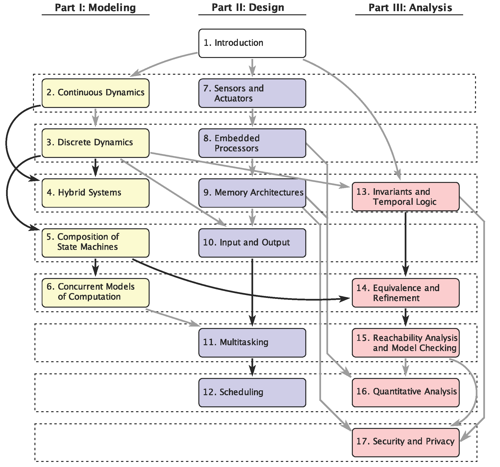

Structure of the Book

This book is organized into three parts that are relatively independent of one another and are largely meant to be read concurrently. Strong dependencies between chapters are shown with arrows in black. Weak dependencies are shown in grey. When there is a weak dependency from chapter i to chapter j, then j may mostly be read without reading i, at most requiring skipping some examples or specialized analysis techniques. A systematic reading of the text can be accomplished in seven segments, shown with dashed outlines. Each segment includes two chapters, so complete coverage of the text is possible in a 14 week semester, assuming each of the seven modules takes two weeks. A more detailed discussion of the structure of the book may be found in its preface.